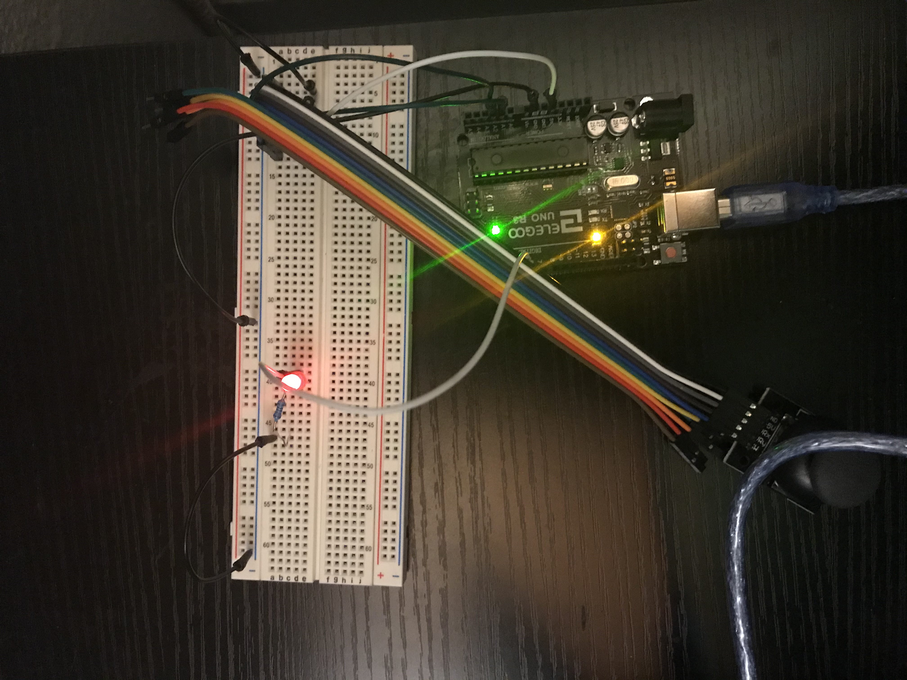
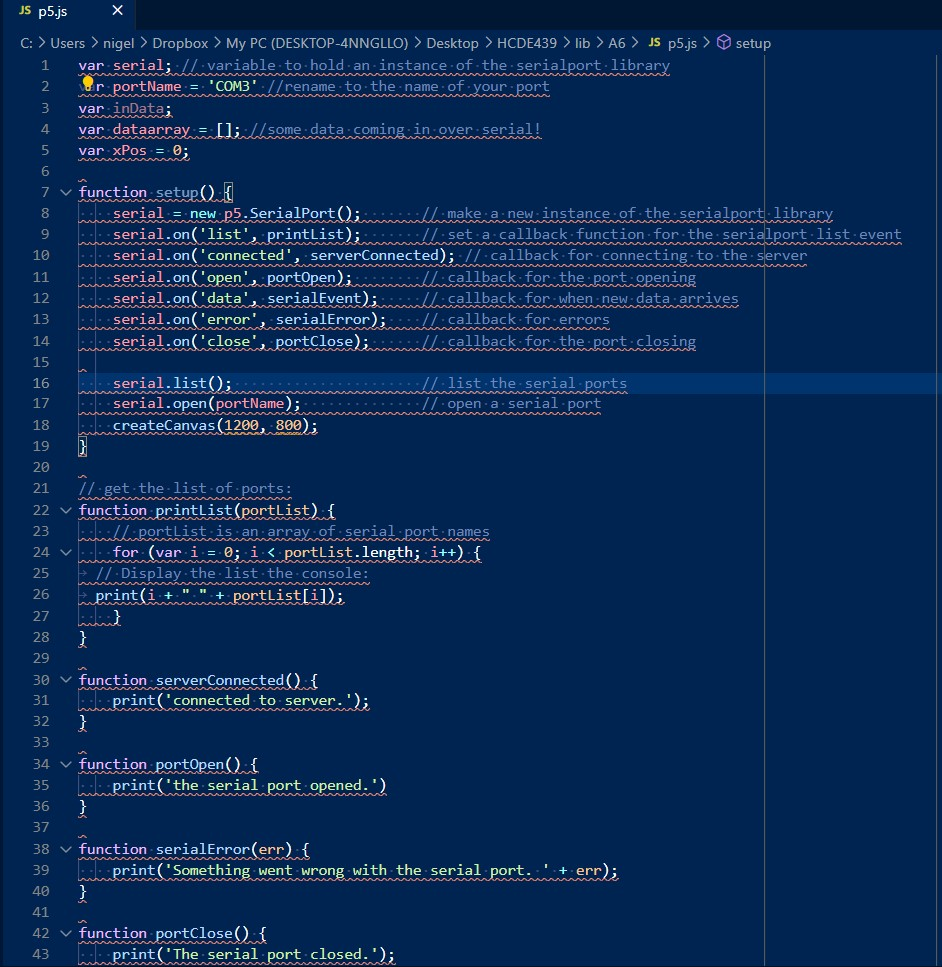
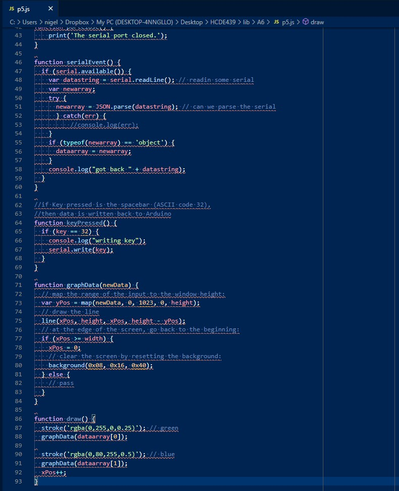
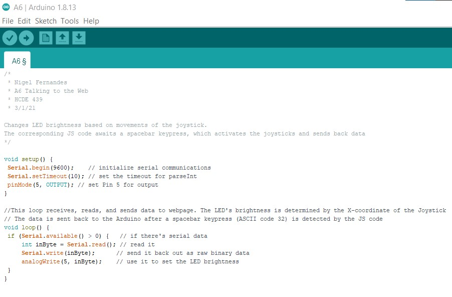
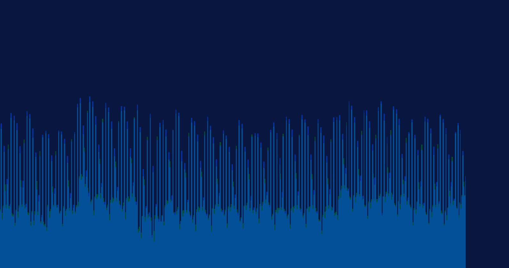

Here is all the documentation for assignment 5!    
This is the schematic that shows how I planned out my circuit. My calculations for how I chose my resistor is shown in this image as well.
This is my circuit that shows how I configured my breadboard and wires. The image shows how the joystick and LED are connected on the breadboard. The multicolored Dupont wires are connected to the ground, 5V, Xpos, Ypos, and switch of the joystick potentiometer. The black wires go to ground and the white wires connect to power and Pin 5.